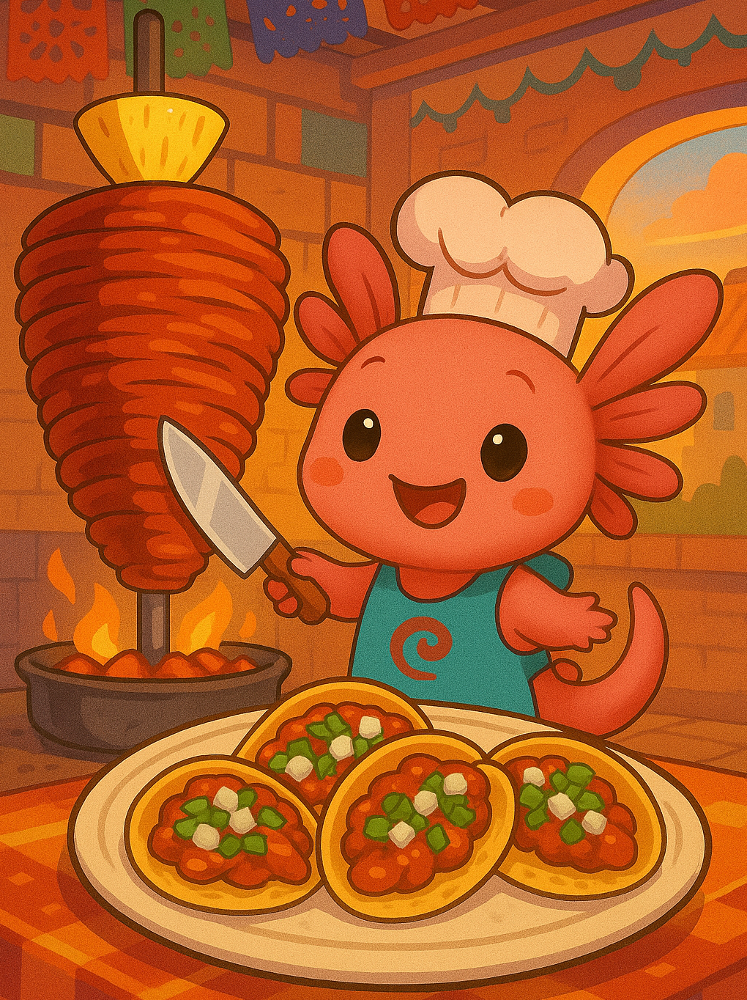
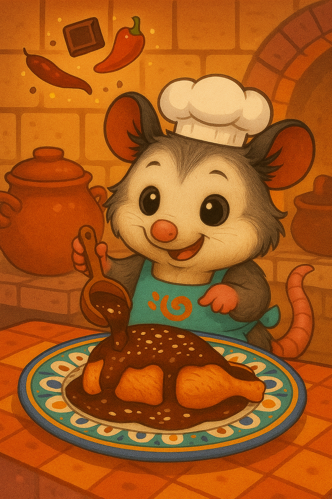
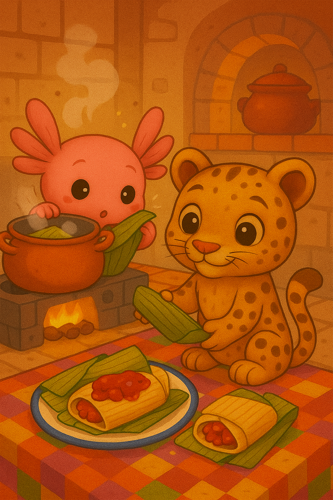
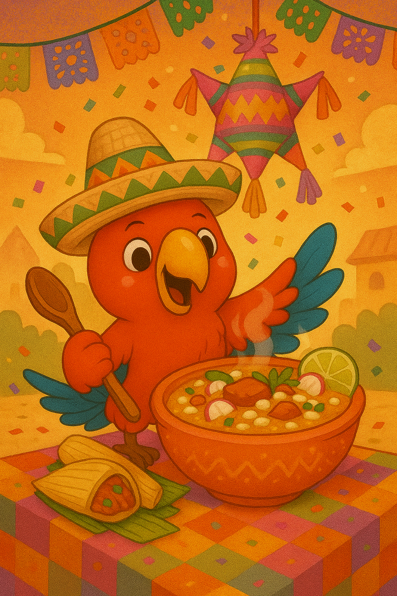
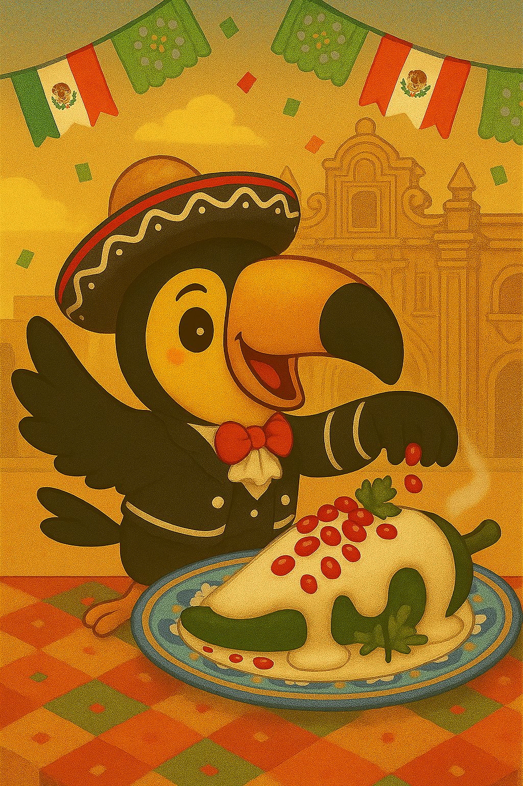
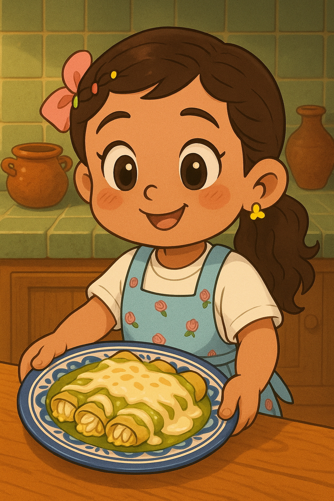
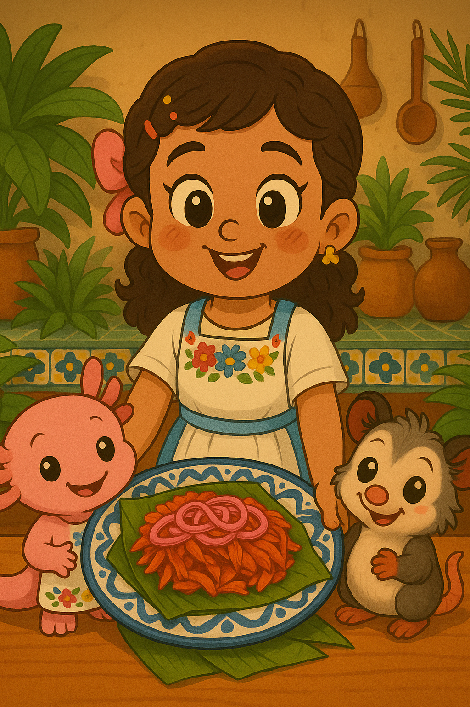
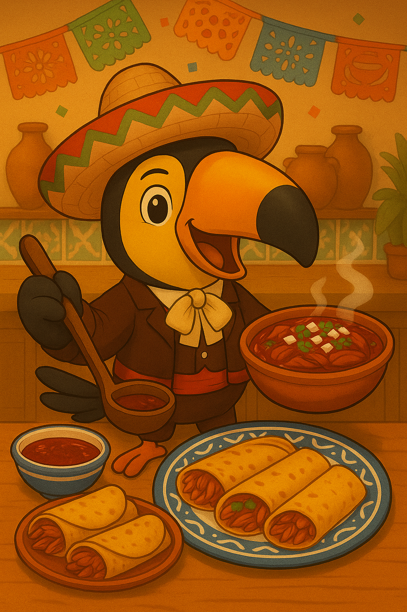

Sabores de México
Los Tatipilis te muestran sus platillos favoritos.

Platillos tradicionales
La cocina mexicana está llena de colores, aromas y sabores que cuentan historias de antaño. Aquí podrás conocer algunos de los platillos más representativos.







